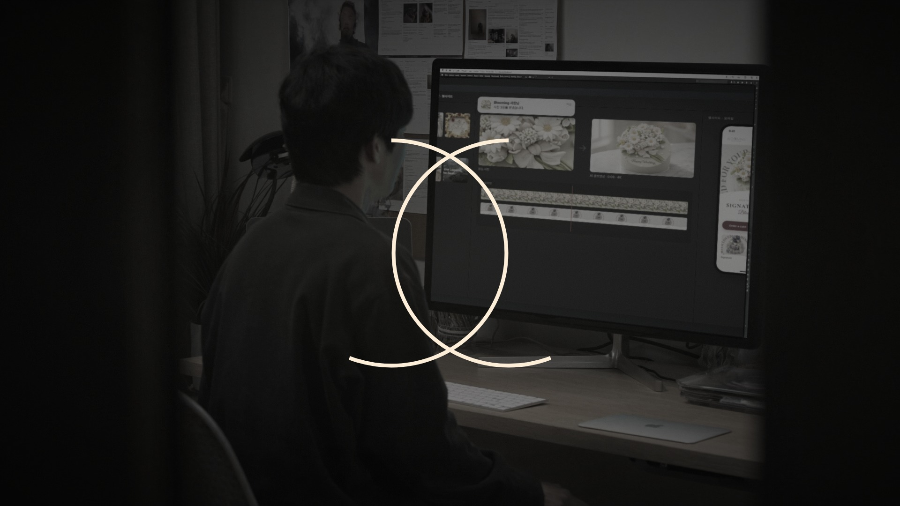
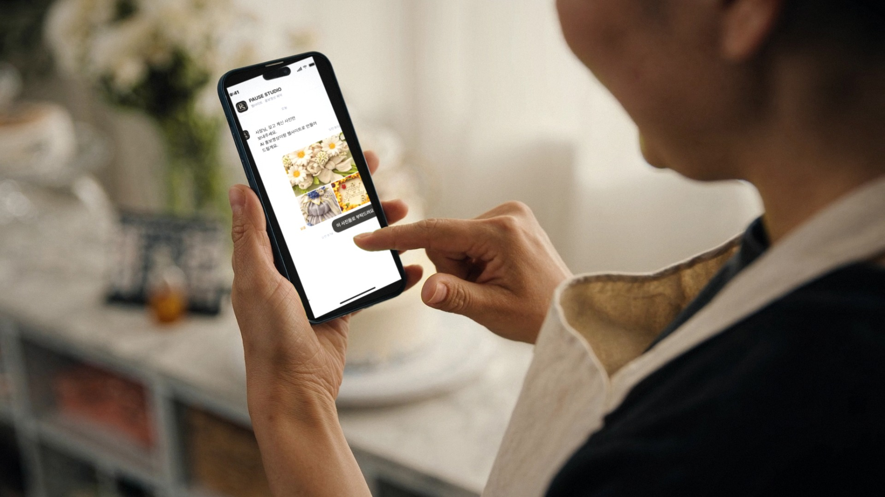
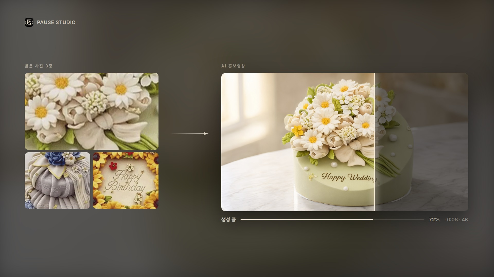
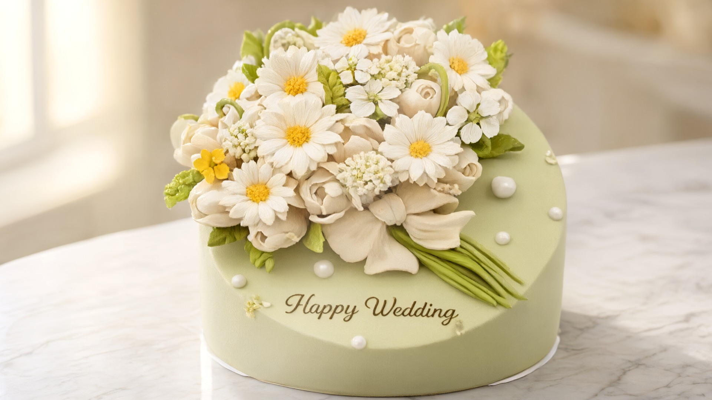
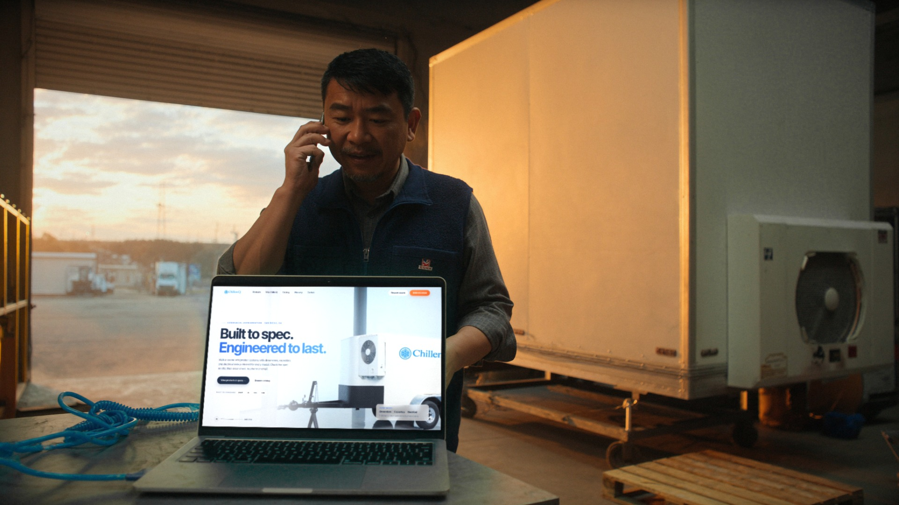
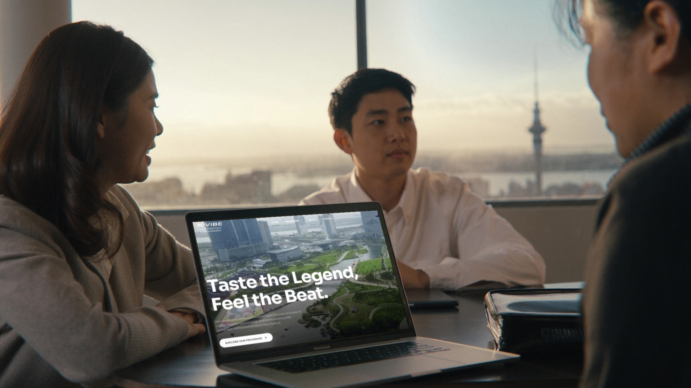
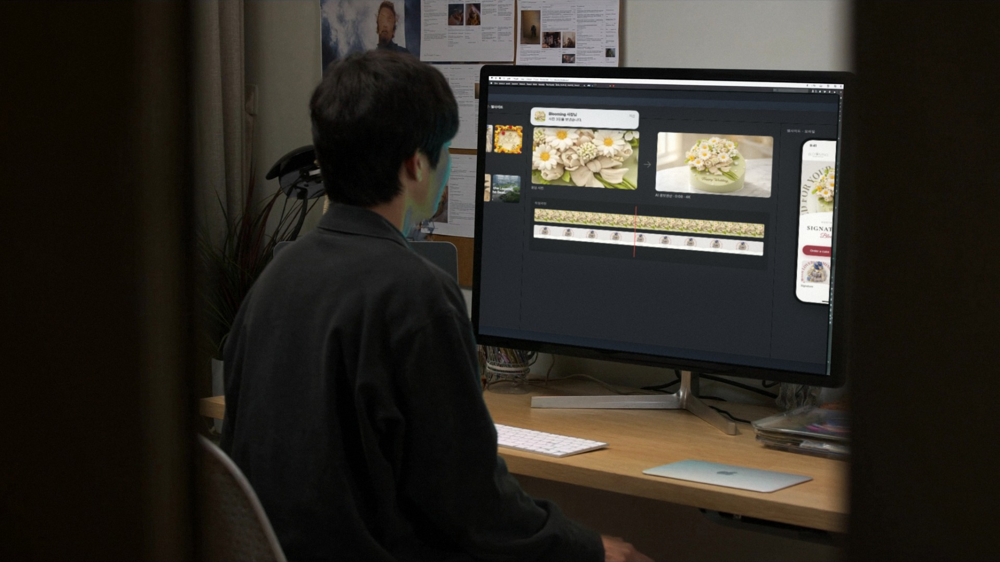

PAUSE STUDIO — 12차 콘티: 사진 한 장이 AI 홍보영상과 웹사이트가 되기까지
이번에 바뀐 점: Chemilife(건강기능식품 온라인 주문) 추가 · 동대문은 과장된 웃음 대신 편한 대화, 초점은 휴대폰에 · 컷 2를 "AI 홍보영상 생성" 화면으로 바꿔 AI 영상 제작을 화면 속 글자로 직접 보여줌 · 흐릿하던 케이크를 고화질로(사이트 속 케이크를 참고해 같은 케이크를 AI로 다시 만든 것 = 서비스 시연) 흐름: 아침 사진 보내기 → AI 홍보영상 → 낮 손님들(카페·집) → 오후(작업장·유학원) → 밤(동대문·작업실) → 로고로 멈췄다가 다시 시작 · 약 27초 무한 반복 · 자막 없음 사이트 첫 화면 고정 문구: "웹사이트 · AI 홍보영상 제작" + 관리비 0원 + 상담 버튼 — 영상과 함께 AI 영상 제작을 분명히 전달
루프 연결

0:25.5–0:26.5
끝 ①마지막 장면이 "일시정지"되듯 멈추며 색이 빠지고 로고의 두 원이 그려짐
0:26.5–27 / 0:00–0:01.5
끝 ② = 시작PAUSE STUDIO 로고 카드 — 마지막 프레임이자 첫 프레임
0:01.5–0:02.5
시작두 원이 렌즈처럼 커지며 그 안으로 컷 1
본편 8컷

0:02.5–0:05
컷 1 케이크 가게 · 아침사장님이 채팅으로 케이크 사진을 보냄 — 화면 속 문구 "AI 홍보영상이랑 웹사이트로 만들어 드릴게요"


0:05–0:08
컷 2 화면 인서트 · AI 홍보영상받은 사진 3장 → "AI 홍보영상 · 생성 중" 화면에서 빛이 지나가며 평범한 사진이 고급 영상으로 → 그 영상이 화면을 가득 채우고 움직임
0:08–0:11
컷 3 폰손비 카페 · 현지 손님 iPhone같은 케이크가 Blooming 모바일 사이트 히어로 영상으로 → 스크롤 → "Order a cake"
0:11–0:14
컷 4 집 부엌 · 낮Chemilife(건강기능식품 온라인 쇼핑몰): 한국인 손님이 휴대폰으로 "연어 rTG 오메가3 1+1"을 보고 "바로 주문하기"

0:14–0:17
컷 5 냉장 설비 작업장 · 오후고객과 통화하며 노트북의 ChillenQ 사이트를 보는 담당자

0:17–0:20
컷 6 시내 유학원 · 해 질 녘상담사와 한국인 가족, MacBook에 K-VIBE
0:20–0:23
컷 7 동대문 · 밤실제 가게 그대로(간판·유리창·네온), 현지인·한국인 친구 넷이 막걸리 주전자·소주·치킨으로 편하게 이야기. 초점은 휴대폰 속 동대문 사이트

0:23–0:25.5
컷 8 PAUSE 작업실 · 밤화면: 받은 사진 → AI 홍보영상 → 모바일 사이트, 새 사진 알림이 뜨는 순간 멈춤
 0:01.5–0:02.5
0:01.5–0:02.5 0:08–0:11
0:08–0:11 0:11–0:14
0:11–0:14 0:20–0:23
0:20–0:23